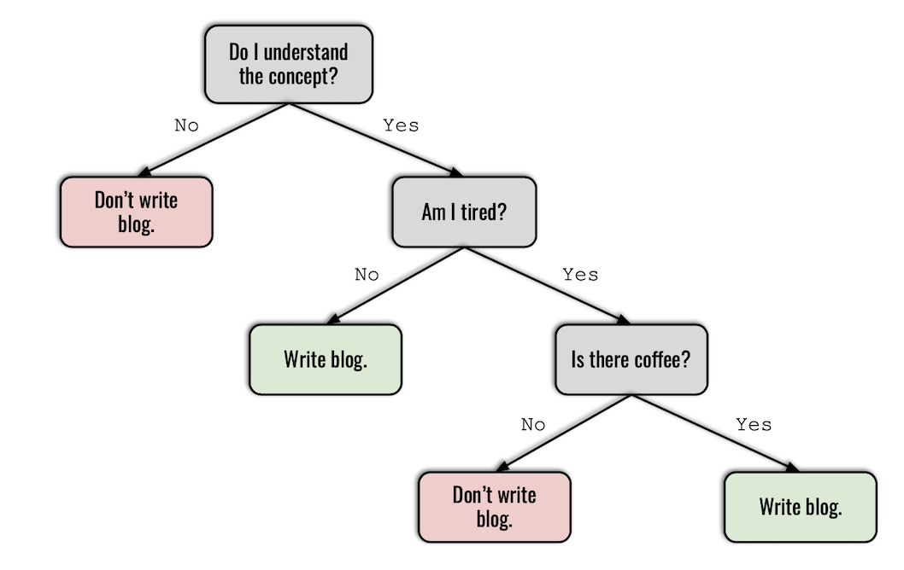
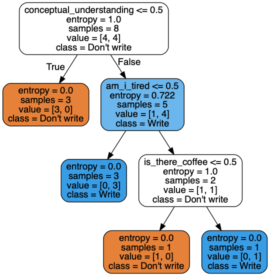

Decision Trees, also referred to as CART (Classification and Regression Trees), are one of the most popular and well understood machine learning algorithms. Decision trees are super intuitive and interpretable because they mimic how the human brain works. That said, decision trees may lag behind other, more complex machine learning algorithms (sometimes called 'black box algorithms') in accuracy. However, in many situations, like in the context of a business where you can't make certain decisions without being able to explain why (think of a bank giving out loans to individuals), interpretability is much more important than accuracy.
Decision trees are essentially a bunch of if-then-else rules stacked on top of each other. Here is a silly example:
from IPython.display import Image, HTML
Image(filename='decision_tree.png', width=600)

The decision tree algorithm operates by coming up with rules and partitioning the data accordingly at each node in a sequential manner. But how does the algorithm figure out the logical order of rules? In the above case, how can it know that my understanding of the concept is the number one question that must be answered yes, before any other thing such as whether or not there is coffee?
Answer: with the help of some good old math! Decision trees are built in a top-down fashion through finding the attribute that maximizes something called information gain at each split. The idea is that, the higher the information gain, the higher the importance of the attribute in determining the outcome/target variable. Decision trees are often called a greedy algorithm because they find the best partition each step instead of the one that will ultimately lead to the most accurate prediction.
The formula for information gain is as follows:
$$ \begin{eqnarray} \text{Information Gain} &=& G(\text{parent}) - \sum_{\text{children}}\frac{N_j}{N}G(\text{children}_j) \end{eqnarray} $$
This can look intimidating at first but it's actually quite simple. The function G() is something called the gini index. To compute information gain, we simply deduct the weighted sum of the gini indexes of the children nodes from the gini index of the parent node. The attribute that yields the highest information gain when partioned to its children gets chosen as the root node. This process continues with the remaining subset of data until there is no way to further partition the tree, which is when there is one class left in each leaf node. When that is the case, the decision tree is considered complete.
Gini index measures the probability of a particular variable being wrongly classified when randomly chosen. In practical terms, it is a measure of impurity of an attribute. Gini index ranges from 0 to 1. If the attribute in question is composed of a single class, for example, all yes's or all no's, then that attribute is considered pure and the gini index takes on a value of 0. If the classes are equally distributed, for example, 50% yes's and 50% no's, gini index takes on a value of 0.5.
Here is the formula for the Gini index:
$$ \begin{eqnarray} \text{Gini} &=& 1 - \sum_{i=1}^{classes} P(\text{class i})^2 \end{eqnarray} $$
Gini index is used interchangeably with something called entropy, a slightly different measure of impurity which uses logarithms. They yield very similar results.
To better understand the gini index and information gain, let's manually rebuild a decision tree.
import numpy as np
import pandas as pd
blog_post = pd.DataFrame({'conceptual_understanding': ['No', 'No', 'No', 'No', 'Yes',
'Yes', 'Yes', 'Yes', 'Yes', 'Yes'],
'am_i_tired': ['No', 'No', 'No', 'Yes', 'No',
'No', 'No', 'Yes', 'Yes', 'Yes'],
'is_there_coffee': ['No', 'No', 'No', 'No', 'No',
'No', 'No','Yes', 'Yes', 'No'],
'write_blog': ['No', 'No', 'No', 'No', 'Yes',
'Yes', 'Yes', 'Yes', 'Yes', 'No']
})
from sklearn.tree import DecisionTreeClassifier
from sklearn_pandas import DataFrameMapper, CategoricalImputer
from sklearn.preprocessing import LabelEncoder, LabelBinarizer
from sklearn.model_selection import train_test_split
# preprocessing the data
mapper = DataFrameMapper([
('conceptual_understanding', LabelEncoder()),
('am_i_tired', LabelEncoder()),
('is_there_coffee', LabelEncoder()),
('write_blog', LabelEncoder())
], df_out=True)
blog_post = mapper.fit_transform(blog_post)
X = blog_post.iloc[:, :-1]
y = blog_post['write_blog']
X_train, X_test, y_train, y_test = train_test_split(X, y, random_state=42, test_size=0.2)
Check out my previous blog post on DataFrameMapper for more information on how it works.
# instantiate the Decision Tree
dt = DecisionTreeClassifier()
dt.fit(X_train, y_train)
DecisionTreeClassifier(class_weight=None, criterion='gini', max_depth=None,
max_features=None, max_leaf_nodes=None,
min_impurity_decrease=0.0, min_impurity_split=None,
min_samples_leaf=1, min_samples_split=2,
min_weight_fraction_leaf=0.0, presort=False, random_state=None,
splitter='best')
dt.score(X_test, y_test)
1.0
A perfect score! Our Decision Tree Classifier can predict whether I'm going to write a blog post or not with 100% accuracy. Let's see how the algorithm partitioned the data.
from IPython.display import Image
import pydotplus
from sklearn import tree
dot_data = tree.export_graphviz(
dt,
out_file=None,
filled=True,
rounded=True,
feature_names=X_train.columns,
class_names=['Don\'t write', 'Write'])
graph = pydotplus.graph_from_dot_data(dot_data)
Image(graph.create_png(), width=400)

We see that the algorithm was able to produce the exact same order of rules I came up with through logic, with math. Here, we can also see the number of samples that got partitioned at each node, along with the gini indexes that were calculated. Now, let's redo this manually.
Step one: We have 100% of the train data (8 samples). Our train dataset includes 3 variables: conceptual_understanding, am_i_tired and is_there_coffee.
train_data = X_train.merge(y_train, how='inner', on=X_train.index).set_index('key_0')
HTML(train_data.head().to_html(classes="table table-stripped table-hover"))
| conceptual_understanding | am_i_tired | is_there_coffee | write_blog | |
|---|---|---|---|---|
| key_0 | ||||
| 5 | 1 | 0 | 0 | 1 |
| 0 | 0 | 0 | 0 | 0 |
| 7 | 1 | 1 | 1 | 1 |
| 2 | 0 | 0 | 0 | 0 |
| 9 | 1 | 1 | 0 | 0 |
# Define Gini function.
def gini(y):
y = list(y)
unique_elements = set(y)
gini_sum = []
# Iterate through each class.
for element in unique_elements:
# Calculate observed probability of class i.
prob = (y.count(element) / len(y))
# Square the probability and append it to gini_sum.
gini_sum.append(prob ** 2)
return 1 - sum(gini_sum)
# Define Information Gain function.
def information_gain(df, column):
# Calculate parent_gini
parent_gini = gini(df['write_blog'])
# Calculate the weighted sum of child ginis
child_0_gini = gini(df[df[column] == 0]['write_blog'])
child_1_gini = gini(df[df[column] == 1]['write_blog'])
child_0_count = len(df[df[column] == 0]['write_blog'])
child_1_count = len(df[df[column] == 1]['write_blog'])
child_ginis_weighted_sum = child_0_gini * child_0_count/len(df['write_blog']) + child_1_gini * child_1_count/len(df['write_blog'])
# Return information gain
return parent_gini - child_ginis_weighted_sum
Let's calculate the information gain for each 3 variables at the root node.
print(f'Parent gini: {gini(train_data.write_blog)}\n')
print('Information gain at the root node:\n')
a = information_gain(train_data, 'conceptual_understanding')
b = information_gain(train_data, 'am_i_tired')
c = information_gain(train_data, 'is_there_coffee')
print(f'\t1. conceptual_understanding: {round(a, 3)}\n')
print(f'\t2. am_i_tired: {round(b, 3)}\n')
print(f'\t3. is_there_coffee: {round(c, 3)}')
Parent gini: 0.5
Information gain at the root node:
1. conceptual_understanding: 0.3
2. am_i_tired: 0.033
3. is_there_coffee: 0.071
Since conceptual_understanding yields the highest information gain, we choose it as the root node. The 3 rows for which conceptual_understanding is no assume a target value of don't write.
Step 2: We recalculate information gain for the other 5 rows for which conceptual_understanding is yes.
# get the remaining data
remaining_data = train_data[train_data['conceptual_understanding'] != 0]
# calculate information gain for the remaining data
print(f'Parent gini: {round(gini(remaining_data.write_blog), 3)}\n')
print('Information gain at the first internal node:\n')
a = information_gain(remaining_data, 'conceptual_understanding')
b = information_gain(remaining_data, 'am_i_tired')
c = information_gain(remaining_data, 'is_there_coffee')
print(f'\t1. conceptual_understanding: {round(a, 3)}\n')
print(f'\t2. am_i_tired: {round(b, 3)}\n')
print(f'\t3. is_there_coffee: {round(c, 3)}')
Parent gini: 0.32
Information gain at the first internal node:
1. conceptual_understanding: 0.0
2. am_i_tired: 0.12
3. is_there_coffee: 0.02
Notice how information gain for conceptual_understanding is now 0, since all rows have a value of yes. In non-math terms, this variable is no longer useful in determining the outcome of whether I write the blog post or not. Since am_i_tired has the highest information gain here, we select it as the first internal node. The 3 rows for which am_i_tired is no assume a target value of write.
Step 3: We recalculate information gain for the remaining 2 rows, where both conceptual_understanding and am_i_tired are yes.
# get the remaining data
remaining_data_2 = remaining_data[remaining_data['am_i_tired'] != 0]
# calculate information gain for the remaining data
print(f'Parent gini: {gini(remaining_data_2.write_blog)}\n')
print('Information gain at the second internal node:\n')
a = information_gain(remaining_data_2, 'conceptual_understanding')
b = information_gain(remaining_data_2, 'am_i_tired')
c = information_gain(remaining_data_2, 'is_there_coffee')
print(f'\t1. conceptual_understanding: {round(a, 3)}\n')
print(f'\t2. am_i_tired: {round(b, 3)}\n')
print(f'\t3. is_there_coffee: {round(c, 3)}')
Parent gini: 0.5
Information gain at the first internal node:
1. conceptual_understanding: 0.0
2. am_i_tired: 0.0
3. is_there_coffee: 0.5
Now, is_there_coffee has the highest information gain because the other two variables no longer impact the outcome. If is_there_coffee is no, the target variable is don't write. If is_there_coffee is yes, the target variable is write. Since there is no way to further partition the tree at this point, our decision tree is complete.
Now that we understand how decision trees work, let's talk about their hyperparameters.
In machine learning, hyperparameters are built in model configurations whose values are specified before the learning process begins. They are independent from the data on which the model is fit and can be tuned as desired.
Hyperparameters can dramatically change the performance of a model, and finding the combination of hyperparameters that yield the best performance is an integral component of a machine learning workflow.
Let's examine the hyperparameters available in decision trees.
criterion: Measure of impurity that will be used to calculate information gain in building the tree. Options = [gini, entropy]. Default = gini.
max_depth: The maximum number of nodes in a decision tree. Unless max depth is specified, decision tree will automatically extend until all leaf nodes are pure or contain less than min_samples_split samples. Options = [None, int]. Default = None.
min_samples_split: The minimum number of samples required to partition a node. If we had set min_samples_split to 3 when we instantiated the model above, the data would not be partitioned at is_there_coffee since only 2 samples remained at that node. Options = [int, float]. Default = 2.
min_samples_leaf: The minimum number of samples required to be a leaf node. Data will not be partitioned at a node if any of its children to the right or left would have less samples than min_samples_leaf. As an example, if I had specified min_samples_leaf as 2, the data would not be split at is_there_coffee because both of its children have 1 sample. Options = [int, float]. Default = 1.
max_features: The maximum number of features to consider when looking for the best split. In the above example, we calculated information gain for all 3 features in the dataset at each partition. If max_features was specified as 2, information gain would be computed for only 2 of the features at each split. Options = [None, int, string, float]. Default = None.
max_leaf_nodes: Maximum number of leaf nodes that can exist in the decision tree. If it is specified, the decision tree stops partitioning once it reaches the set number of leaf nodes. Options = [None, int]. Default = None.
min_impurity_split:
class_weight:presort:Final points * Pruning decision trees